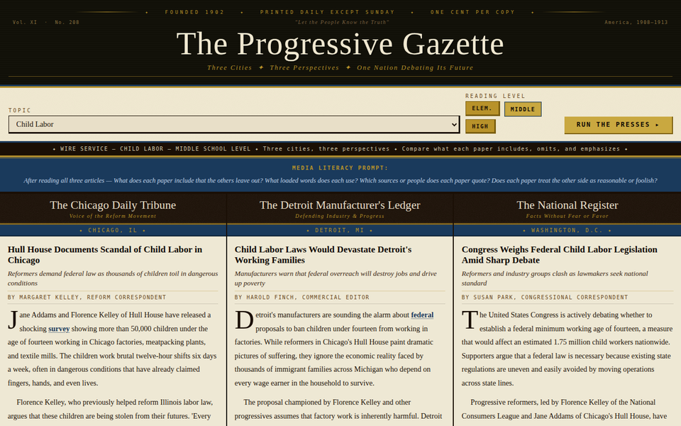
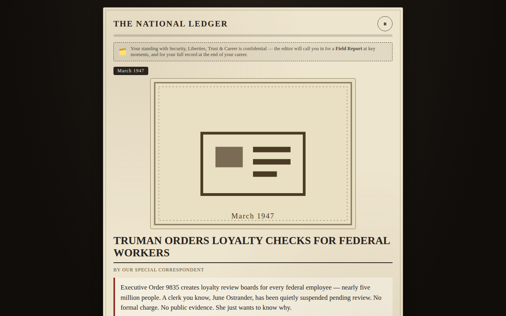
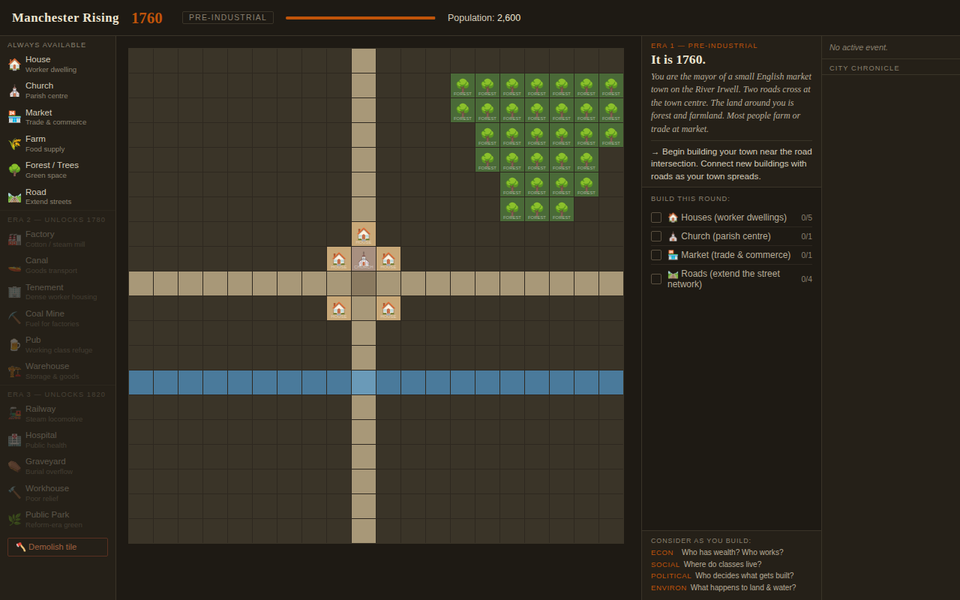
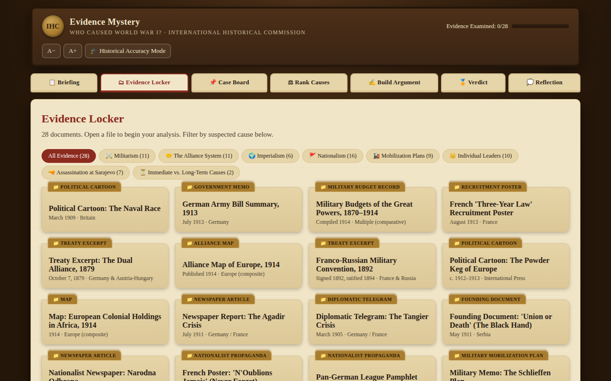
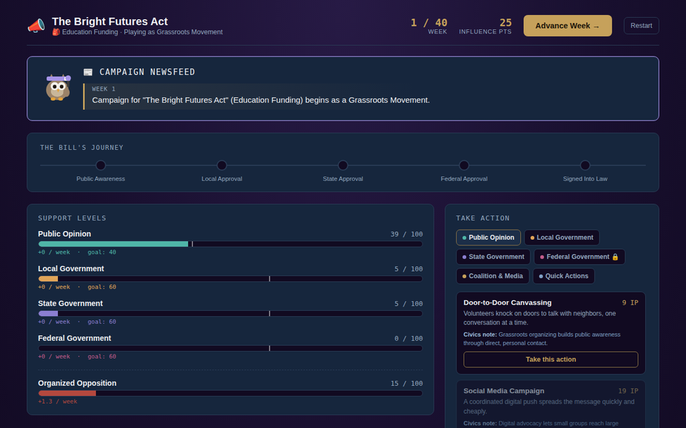
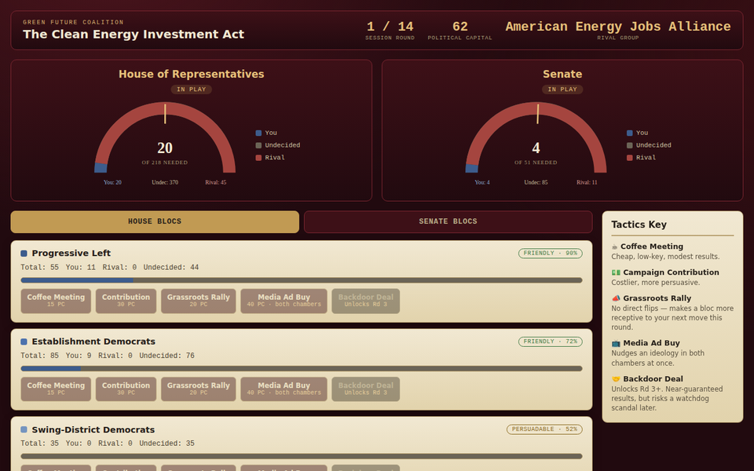

Popular With Classrooms
Standards-aligned, teacher-tested, genuinely fun. Play a digital game right now, or bring a full campaign into your classroom. What's the difference? →
Short-Form Digital Games
Playable right now, free, in any browser: a single class period is all you need.
U.S. History

Founders Quest: Pixel Republic
An 8-bit platformer where you play as Jefferson, Madison, or Hamilton, each with a different perk, racing through levels themed around the Declaration of Independence, the Articles of Confederation, and the Constitution.
Play →
The Progressive Gazette
Run the presses on real Progressive-Era debates like child labor, displaying three perspectives at once, pro, anti, and neutral, each from a different American city.
Play →
Cold War Correspondent
Work as a news reporter during three distinct periods of the Cold War. Strive for accurate reporting during a period of heavy distrust and bias.
Play →World History

Medieval Fate
Draw a random role in medieval society, serf, clergy, or noble, and see how far your choices carry you through a rigid, class-stratified world.
Play →
Manchester Rising
Build and manage a 19th-century city as it transforms from a pre-industrial market town into a factory powerhouse, and weigh its growth against its human cost.
Play →
Evidence Mystery: Who Caused World War I?
Examine 28 pieces of primary-source evidence as an investigator for the International Historical Commission and build your own case for what really caused the war.
Play →
The Silk Roads: Trade & Connection
Lead one of six regions along the Silk Road network, trade goods to earn your region's own asymmetric achievement, and build the widest web of trading partners you can.
Play →
A New Japan: A Meiji Restoration Story
Choose a role, samurai, merchant, farmer, or a samurai household's daughter, and live a branching narrative through Japan's transformation from 1853 to 1889, pausing to examine primary sources and reflect along the way.
Play →Government & Economics

Passed
Grow public support and move a policy idea through the layered structures of American government: from public opinion, to city hall, to the statehouse, to Congress.
Play →
Whip Count
Run an interest group racing a rival lobbyist to win a majority in both chambers of Congress: spend your Political Capital wisely as weekly headlines swing votes for or against you.
Play →
Remember the Amendments
A timed constitutional matching game: pair each amendment with its definition, its effect on government structure, and its real-world impact across three escalating rounds.
Play →No games match the selected filters. to see all games.
More games
Additional titles will be added here as they're ready.
Long-Form Campaigns
Our specialty: unit- and semester-long narratives you run in your own classroom, where students return to the same roles and consequences as the story compounds. Running campaigns like these, we've seen average absences drop from 6.3 to 4.1 per day.
The Nations Game
Students lead rival fictional countries through decades of diplomacy: treaties signed and broken, wars, coalitions, refugee crises, and consequences that compound for months. Our students rediscovered the Treaty of Versailles on their own from inside this one.
Ask about running this →The Business Simulation
Students build and run businesses across an economics course, applying every principle they learn (supply, demand, labor, investment) to enterprises they own and defend all year long.
Ask about running this →The Industrialization Journey
A decision-tree narrative through the Industrial Revolution: each student starts as a farmer or small-business owner and navigates five years of choices (unions, steam power, safety standards) that decide how their family fares as the world industrializes.
Ask about running this →